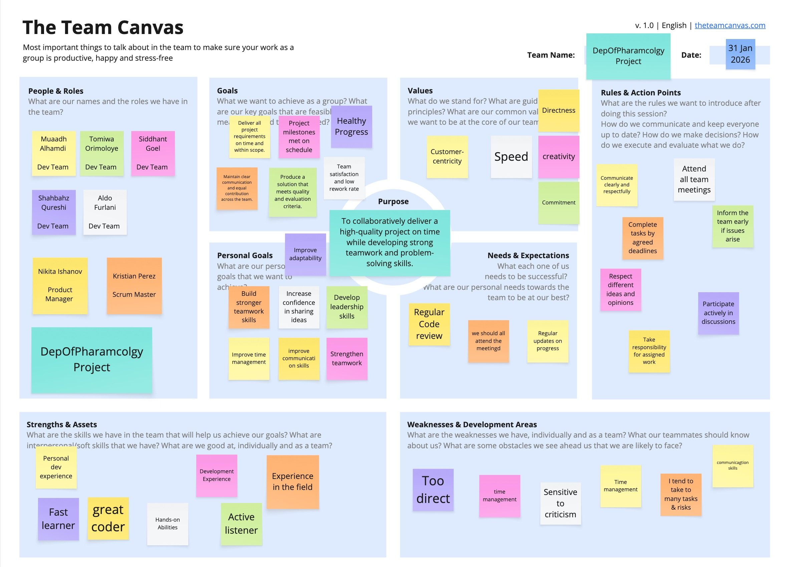

Teamwork
Team Canvas

Scrum Roles
- Scrum Master: Kristian Perez
- Product Owner: Nikita Ishanov
Belbin Roles
Team Role Overview
| Name | Preferred Roles | Manageable Roles | Least Preferred Roles |
|---|---|---|---|
| Tomiwa Orimoloye | SP, ME, CF | SH, IMP, PL | TW, CO, RI |
| Nikita Ishanov | SH, CO, IMP | RI, ME, CF | TW, SP, PL |
| Siddhant Goel | CF, IMP, PL | RI, ME, TW | CO, SP, SH |
| Kristian Perez | IMP, CF, SP | SH, PL, ME | RI, TW, CO |
| Muaadh Alhamdi | CO, CF, IMP | TW, SH, RI | SP, PL, ME |
| Aldo Furlani | IMP, SP, ME | CF, SH, RI | PL, CO, TW |
| Shahbahz Qureshi | ME, PL, IMP | CF, SP, RI | TW, CO, SH |
Belbin Role Breakdown
🧠 Thinking Roles
PL — Plant
Tends to be highly creative and good at solving problems in unconventional ways.
- Preferred: Siddhant Goel, Shahbahz Qureshi
- Manageable: Kristian Perez, Tomiwa Orimoloye
ME — Monitor Evaluator
Provides a logical eye, making impartial judgements and weighing options objectively.
- Preferred: Tomiwa Orimoloye, Aldo Furlani, Shahbahz Qureshi
- Manageable: Siddhant Goel
SP — Specialist
Brings in-depth knowledge of a key area to the team.
- Preferred: Tomiwa Orimoloye, Aldo Furlani, Kristian Perez
- Manageable: Shahbahz Qureshi
⚙️ Action Roles
SH — Shaper
Drives the team forward and maintains momentum.
- Preferred: Nikita Ishanov
- Manageable: Tomiwa Orimoloye, Muaadh Alhamdi
IMP — Implementer
Plans and executes workable strategies efficiently.
- Preferred: Kristian Perez, Aldo Furlani, Nikita Ishanov, Shahbahz Qureshi
CF — Completer Finisher
Ensures high-quality output by identifying errors and polishing work.
- Preferred: Siddhant Goel, Kristian Perez, Muaadh Alhamdi
- Manageable: Shahbahz Qureshi
🤝 People Roles
RI — Resource Investigator
Explores opportunities and brings external ideas into the team.
- Manageable: Nikita Ishanov, Siddhant Goel, Aldo Furlani, Shahbahz Qureshi
TW — Teamworker
Supports collaboration and helps the team gel effectively.
- Manageable: Siddhant Goel
CO — Co-ordinator
Clarifies goals, delegates tasks, and keeps the team aligned.
- Preferred: Muaadh Alhamdi, Nikita Ishanov